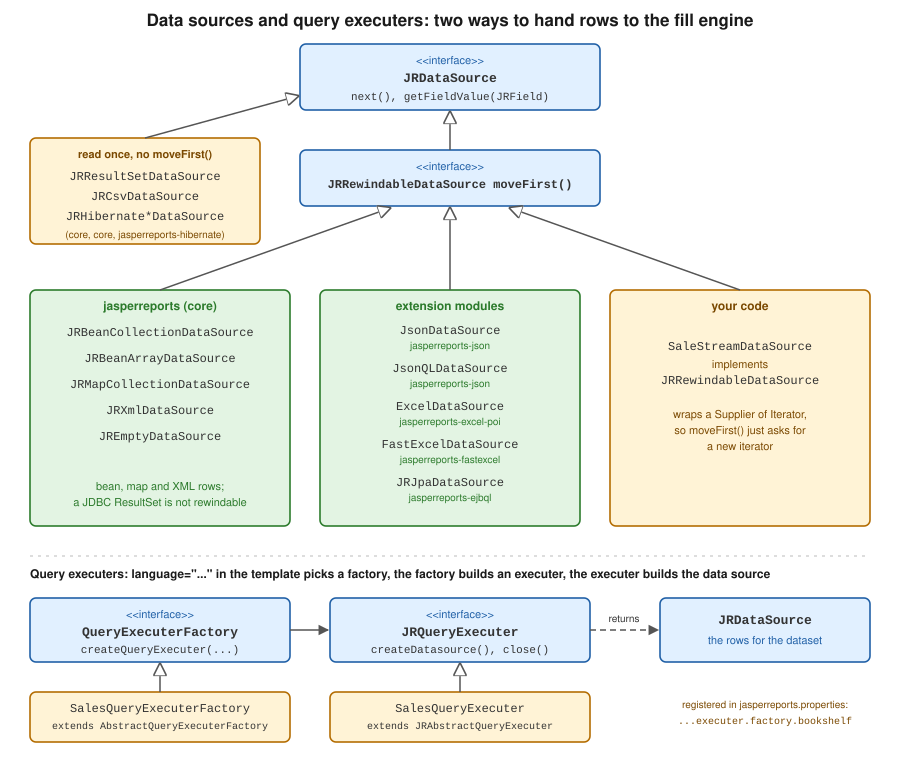

Data Sources & Query Executers
|
This content was generated with the assistance of AI and should be verified against the official documentation before being relied on in production. |
Baseline date: 2026-10-09. A JasperReports template describes how rows look; it does not know where they come from.
At fill time the engine needs exactly one thing for each dataset: a JRDataSource, an object that hands over one row at
a time. Everything on this page is a way to obtain that object, either by building it in Java and passing it to
fillReport, or by writing a query in the template and letting a query executer build it. The page walks through the
data sources that ship with JasperReports 7.0.8 and the two extension points for writing your own, using the monthly
sales report of the Bookshelf Billing service as the running example.
All examples were compiled and run with Java 21 source level, JasperReports 7.0.8, H2 2.4.240 as the database, and (for the JPA example) Hibernate ORM 7.4.12 with Jakarta Persistence 3.2.0. For every example the generated PDF was opened and its text compared with the input rows. What was not run is stated where it comes up. This page covers where the data comes from; the template language itself is in JRXML Report Design, the surrounding lifecycle in JasperReports Architecture & Lifecycle, and how a report is wired into a Spring Boot service in Generating Reports from Databases & Services.
Two ways to feed a report
The figure shows the two paths. In the first, application code creates a JRDataSource and passes it to
JasperFillManager.fillReport(report, parameters, dataSource); the template has no <query> element. In the second,
the template declares <query language="...">, the engine looks up the query executer factory registered for that
language, and the factory’s executer runs the query text and returns a JRDataSource. JDBC is the best known case: the
sql language is a query executer whose factory expects a java.sql.Connection in the REPORT_CONNECTION parameter.

JRDataSource has two methods. next() moves to the next row and returns false at the end, and
getFieldValue(JRField) returns the value of one field of the current row, identified by the field’s name (and its
description, which several data sources use as a mapping hint). JRRewindableDataSource adds moveFirst(), which
restarts the iteration. Whether a data source is rewindable matters when the same instance is read more than once, for
example by two successive fills. In 7.0.8 the bean, map, XML, JSON, JSONQL, Excel, JPA and empty data sources are
rewindable; JRResultSetDataSource (the one created for JDBC queries) and JRCsvDataSource are not, which was
checked by reflection on the 7.0.8 jars.
Maven dependencies
The first example needs the engine, the PDF exporter, the fonts extension and a compiler for the report’s Java expressions. The other examples add one artifact each, listed where they are introduced. Spring Boot setup in a real service is in Getting Started with Spring Boot.
<dependency>
<groupId>net.sf.jasperreports</groupId>
<artifactId>jasperreports</artifactId>
<version>7.0.8</version>
</dependency>
<dependency>
<groupId>net.sf.jasperreports</groupId>
<artifactId>jasperreports-pdf</artifactId>
<version>7.0.8</version>
</dependency>
<dependency>
<groupId>net.sf.jasperreports</groupId>
<artifactId>jasperreports-fonts</artifactId>
<version>7.0.8</version>
</dependency>
<dependency>
<groupId>net.sf.jasperreports</groupId>
<artifactId>jasperreports-jdt</artifactId>
<version>7.0.8</version>
</dependency>A shared template and helper
Most examples fill the same flat template: four fields (category, title, quantity, amount) and a detail band.
It is written in the JasperReports 7 JRXML format (namespace-free elements with a kind attribute); templates written
for 6.x do not load in 7.0, and Jaspersoft Studio 7 converts them. Save it as src/main/resources/reports/sales.jrxml.
Field names are the contract between template and data source: every data source below resolves a field by name,
although each one uses the name differently (a getter, a map key, a column header, a JSON property).
<jasperReport name="sales" language="java" pageWidth="595" pageHeight="842"
columnWidth="515" leftMargin="40" rightMargin="40" topMargin="40" bottomMargin="40">
<field name="category" class="java.lang.String"/>
<field name="title" class="java.lang.String"/>
<field name="quantity" class="java.lang.Integer"/>
<field name="amount" class="java.math.BigDecimal"/>
<title height="30">
<element kind="staticText" x="0" y="0" width="515" height="26" fontSize="16" bold="true">
<text><![CDATA[Bookshelf sales]]></text>
</element>
</title>
<detail>
<band height="20">
<element kind="textField" x="0" y="0" width="120" height="18">
<expression><![CDATA[$F{category}]]></expression>
</element>
<element kind="textField" x="120" y="0" width="230" height="18">
<expression><![CDATA[$F{title}]]></expression>
</element>
<element kind="textField" x="350" y="0" width="50" height="18" hTextAlign="Right">
<expression><![CDATA[$F{quantity}]]></expression>
</element>
<element kind="textField" x="400" y="0" width="115" height="18" hTextAlign="Right" pattern="#,##0.00">
<expression><![CDATA[$F{amount}]]></expression>
</element>
</band>
</detail>
</jasperReport>The helper below compiles a template from the classpath and writes the filled report to a PDF. Compiling at run time
is fine for examples; production code compiles once at build time or at start-up and reuses the JasperReport.
package bookshelf;
import java.io.InputStream;
import java.nio.file.Path;
import net.sf.jasperreports.engine.JRException;
import net.sf.jasperreports.engine.JasperCompileManager;
import net.sf.jasperreports.engine.JasperExportManager;
import net.sf.jasperreports.engine.JasperPrint;
import net.sf.jasperreports.engine.JasperReport;
final class Support {
private Support() {
}
static JasperReport compile(String classpathResource) throws JRException {
try (InputStream in = Support.class.getResourceAsStream(classpathResource)) {
return JasperCompileManager.compileReport(in);
} catch (java.io.IOException e) {
throw new JRException(e);
}
}
static void toPdf(JasperPrint print, String fileName) throws JRException {
Path out = Path.of("target", fileName);
JasperExportManager.exportReportToPdfFile(print, out.toString());
System.out.println(fileName + ": " + print.getPages().size() + " page(s)");
}
}Both pieces derive from the JasperReports data source sample.
Beans and maps
JRBeanCollectionDataSource wraps a Collection of objects and reads each field through a bean getter: the field
category calls getCategory(). The object must therefore be a classic JavaBean. A Java record does not work: its
accessor is category(), not getCategory(), and the fill fails with an exception that reports an unknown property
category on the record class (checked on 7.0.8). Use a small class with getters, as below, or a map.
JRMapCollectionDataSource reads rows from Map instances instead, with the field name as the key. It needs no
bean class, which suits rows assembled from several sources or from a JdbcTemplate result. The rows may be immutable
maps. The parameters map passed to fillReport must be mutable, however: the engine adds its built-in parameters to
it, and a Map.of() or other immutable map is rejected with an UnsupportedOperationException (checked on 7.0.8), so
pass a new HashMap<>() even when there are no parameters.
package bookshelf;
import java.math.BigDecimal;
/** A bean data source reads properties through getters, so this must be a classic bean. */
public class SaleRow {
private final String category;
private final String title;
private final int quantity;
private final BigDecimal amount;
public SaleRow(String category, String title, int quantity, BigDecimal amount) {
this.category = category;
this.title = title;
this.quantity = quantity;
this.amount = amount;
}
public String getCategory() {
return category;
}
public String getTitle() {
return title;
}
public int getQuantity() {
return quantity;
}
public BigDecimal getAmount() {
return amount;
}
}package bookshelf;
import java.math.BigDecimal;
import java.util.HashMap;
import java.util.List;
import java.util.Map;
import net.sf.jasperreports.engine.JRDataSource;
import net.sf.jasperreports.engine.JasperFillManager;
import net.sf.jasperreports.engine.JasperPrint;
import net.sf.jasperreports.engine.JasperReport;
import net.sf.jasperreports.engine.data.JRBeanCollectionDataSource;
import net.sf.jasperreports.engine.data.JRMapCollectionDataSource;
public class BeanAndMapReport {
public static void main(String[] args) throws Exception {
JasperReport report = Support.compile("/reports/sales.jrxml");
// 1. Beans: one field name maps to one getter (getCategory -> category).
List<SaleRow> rows = List.of(
new SaleRow("Fiction", "The Pragmatic Novel", 3, new BigDecimal("44.97")),
new SaleRow("Fiction", "Garden of Forking Paths", 1, new BigDecimal("12.50")),
new SaleRow("Science", "Entropy for Librarians", 2, new BigDecimal("59.00")));
JRDataSource beans = new JRBeanCollectionDataSource(rows);
// The parameters map must be mutable: the engine adds built-in parameters to it.
Map<String, Object> params = new HashMap<>();
JasperPrint fromBeans = JasperFillManager.fillReport(report, params, beans);
Support.toPdf(fromBeans, "ds-beans.pdf");
// 2. Maps: the field name is the map key, no bean class needed.
List<Map<String, ?>> maps = List.of(
Map.of("category", "Fiction", "title", "The Pragmatic Novel",
"quantity", 3, "amount", new BigDecimal("44.97")),
Map.of("category", "Science", "title", "Entropy for Librarians",
"quantity", 2, "amount", new BigDecimal("59.00")));
JasperPrint fromMaps = JasperFillManager.fillReport(
report, new HashMap<>(), new JRMapCollectionDataSource(maps));
Support.toPdf(fromMaps, "ds-maps.pdf");
}
}JRBeanArrayDataSource is the same as the collection variant for an array, and the collection variant has a second
constructor argument that controls whether the field description is used as the property path in place of the field
name (see the Javadoc). See the
JRBeanCollectionDataSource and
JRMapCollectionDataSource Javadoc and the
data source sample these examples derive from.
For rows that come from Spring Data repositories, the usual pattern is to map projections to beans or maps and wrap them here; the streaming variant, which keeps memory flat for large result sets, is the custom data source later on this page, and the surrounding Spring code is on Generating Reports from Databases & Services.
JDBC and the sql query language
When the data lives in a relational database, the shortest route is to put the query in the template and give the
engine a Connection. The template declares a parameter, and the query uses it with the usual $P{MIN_AMOUNT}
syntax. Because it is used in a position where a value is expected, the engine turns it into a JDBC bind parameter
rather than pasting text into the SQL; to paste text (a table name or a whole WHERE fragment) the syntax is
$P!{NAME}, which is the one place where SQL injection is possible and must never take user input.
The sales-jdbc.jrxml template is sales.jrxml with these lines added before the fields:
<jasperReport name="sales" language="java" pageWidth="595" pageHeight="842"
columnWidth="515" leftMargin="40" rightMargin="40" topMargin="40" bottomMargin="40">
<parameter name="MIN_AMOUNT" class="java.math.BigDecimal"/>
<query language="sql"><![CDATA[
SELECT category, title, quantity, amount
FROM sale
WHERE amount >= $P{MIN_AMOUNT}
ORDER BY category, title
]]></query>
<field name="category" class="java.lang.String"/>And the Java side opens an in-memory H2 database, creates the table and fills the report. Add the H2 driver
(com.h2database:h2:2.4.240) to follow the example; a PostgreSQL service uses the PostgreSQL driver and a pooled
DataSource, with the URL, user and password read from the environment or the Spring configuration, never hard-coded.
package bookshelf;
import java.math.BigDecimal;
import java.sql.Connection;
import java.sql.DriverManager;
import java.sql.Statement;
import java.util.HashMap;
import java.util.Map;
import net.sf.jasperreports.engine.JasperFillManager;
import net.sf.jasperreports.engine.JasperPrint;
import net.sf.jasperreports.engine.JasperReport;
public class JdbcReport {
public static void main(String[] args) throws Exception {
JasperReport report = Support.compile("/reports/sales-jdbc.jrxml");
// Production code reads the URL, user and password from the environment or a DataSource bean.
try (Connection connection = DriverManager.getConnection("jdbc:h2:mem:bookshelf", "sa", "");
Statement st = connection.createStatement()) {
st.execute("CREATE TABLE sale (category VARCHAR(40), title VARCHAR(80), quantity INT, amount DECIMAL(10,2))");
st.execute("INSERT INTO sale VALUES ('Fiction','The Pragmatic Novel',3,44.97),"
+ "('Fiction','Garden of Forking Paths',1,12.50),('Science','Entropy for Librarians',2,59.00)");
Map<String, Object> params = new HashMap<>();
params.put("MIN_AMOUNT", new BigDecimal("20.00"));
// The Connection goes in as a built-in parameter; the engine runs the query in the template.
JasperPrint print = JasperFillManager.fillReport(report, params, connection);
Support.toPdf(print, "ds-jdbc.pdf");
}
}
}The connection is not closed by JasperReports, so the caller keeps its normal try-with-resources or pool handling.
Query parameters and clauses are described in the
query sample and the
configuration reference, which this example derives from.
The engine also accepts a JRResultSetDataSource built from a ResultSet you opened yourself, for cases where the SQL
is built in Java; that class is the non-rewindable one in the figure.
JSON: JsonDataSource and JSONQL
JSON is handled by the jasperreports-json module. There are two data sources, and both read the JSON from an
InputStream, typically the body of an HTTP response:
-
JsonDataSource(inputStream, selectExpression)takes a selection expression that picks the array of rows from the document; here the propertysales. Fields map to the property of the same name, or to the path in the field’s description. -
The
jsonqlquery language does the same from the template. The input arrives in the built-in parameter named by the constantJsonQLQueryExecuterFactory.JSON_INPUT_STREAM, the query text is the selection expression, and each field can carry the propertynet.sf.jasperreports.jsonql.field.expressionto say which part of the row it reads.
The jsonql template differs from sales.jrxml by a query and the field properties:
<jasperReport name="sales" language="java" pageWidth="595" pageHeight="842"
columnWidth="515" leftMargin="40" rightMargin="40" topMargin="40" bottomMargin="40">
<query language="jsonql"><![CDATA[sales]]></query>
<field name="category" class="java.lang.String"><property name="net.sf.jasperreports.jsonql.field.expression" value="category"/></field>
<field name="title" class="java.lang.String"><property name="net.sf.jasperreports.jsonql.field.expression" value="title"/></field>
<field name="quantity" class="java.lang.Integer"><property name="net.sf.jasperreports.jsonql.field.expression" value="quantity"/></field>
<field name="amount" class="java.math.BigDecimal"><property name="net.sf.jasperreports.jsonql.field.expression" value="amount"/></field>Add net.sf.jasperreports:jasperreports-json:7.0.8. The example below fills the plain template through
JsonDataSource and the jsonql template through the query executer; it also runs the XML examples of the next
section, so its imports cover both.
package bookshelf;
import java.io.ByteArrayInputStream;
import java.io.InputStream;
import java.nio.charset.StandardCharsets;
import java.util.HashMap;
import java.util.Map;
import javax.xml.parsers.DocumentBuilderFactory;
import net.sf.jasperreports.engine.JasperFillManager;
import net.sf.jasperreports.engine.JasperPrint;
import net.sf.jasperreports.engine.JasperReport;
import net.sf.jasperreports.engine.data.JRXmlDataSource;
import net.sf.jasperreports.engine.query.JRXPathQueryExecuterFactory;
import net.sf.jasperreports.json.data.JsonDataSource;
import net.sf.jasperreports.json.query.JsonQLQueryExecuterFactory;
public class JsonAndXmlReport {
static final String JSON = """
{"sales": [
{"category": "Fiction", "title": "The Pragmatic Novel", "quantity": 3, "amount": 44.97},
{"category": "Science", "title": "Entropy for Librarians", "quantity": 2, "amount": 59.00}
]}
""";
static final String XML = """
<sales>
<sale><category>Fiction</category><title>The Pragmatic Novel</title><quantity>3</quantity><amount>44.97</amount></sale>
<sale><category>Science</category><title>Entropy for Librarians</title><quantity>2</quantity><amount>59.00</amount></sale>
</sales>
""";
private static InputStream stream(String text) {
return new ByteArrayInputStream(text.getBytes(StandardCharsets.UTF_8));
}
public static void main(String[] args) throws Exception {
// A. JsonDataSource: the second argument is a JSON selection expression that picks the array.
JasperReport plain = Support.compile("/reports/sales.jrxml");
JsonDataSource json = new JsonDataSource(stream(JSON), "sales");
Support.toPdf(JasperFillManager.fillReport(plain, new HashMap<>(), json), "ds-json.pdf");
// B. The same data through a JSONQL query declared in the template.
JasperReport jsonql = Support.compile("/reports/sales-jsonql.jrxml");
Map<String, Object> p = new HashMap<>();
p.put(JsonQLQueryExecuterFactory.JSON_INPUT_STREAM, stream(JSON));
Support.toPdf(JasperFillManager.fillReport(jsonql, p), "ds-jsonql.pdf");
// C. XML: JRXmlDataSource with an XPath selecting the repeating element.
// Field names resolve through the <description> of each field in the template.
JRXmlDataSource xml = new JRXmlDataSource(stream(XML), "/sales/sale");
xml.setDatePattern("yyyy-MM-dd");
xml.setNumberPattern("#0.00");
xml.setLocale(java.util.Locale.ROOT);
JasperReport xpathReport = Support.compile("/reports/sales-xpath.jrxml");
Support.toPdf(JasperFillManager.fillReport(xpathReport, new HashMap<>(), xml), "ds-xml.pdf");
// D. The same through an xPath query: the parsed document is a built-in parameter.
var factory = DocumentBuilderFactory.newInstance();
factory.setFeature("http://apache.org/xml/features/disallow-doctype-decl", true);
Map<String, Object> q = new HashMap<>();
q.put(JRXPathQueryExecuterFactory.PARAMETER_XML_DATA_DOCUMENT,
factory.newDocumentBuilder().parse(stream(XML)));
q.put(JRXPathQueryExecuterFactory.XML_NUMBER_PATTERN, "#0.00");
q.put(JRXPathQueryExecuterFactory.XML_LOCALE, java.util.Locale.ROOT);
Support.toPdf(JasperFillManager.fillReport(xpathReport, q), "ds-xpath.pdf");
}
}The numbers in the JSON (44.97) were converted to the BigDecimal fields without extra configuration. Fetching the
JSON from another service is ordinary Spring client code (RestClient, covered on the existing
REST APIs page) that hands the response stream to one of these two. The
JSON data source sample and the
JSONQL data source sample are the
official versions of these two paths, and
JsonDataSource is the Javadoc.
XML and XPath
XML mirrors the JSON case. JRXmlDataSource(inputStream, xPath) iterates over the nodes selected by an XPath
expression, and the xPath query language does the same from the template, with the parsed org.w3c.dom.Document in
the built-in parameter XML_DATA_DOCUMENT. Each field says which child to read in its <description>, which is an
XPath relative to the row node. The template differs from sales.jrxml as follows:
<jasperReport name="sales" language="java" pageWidth="595" pageHeight="842"
columnWidth="515" leftMargin="40" rightMargin="40" topMargin="40" bottomMargin="40">
<query language="xPath"><![CDATA[/sales/sale]]></query>
<field name="category" class="java.lang.String"><description><![CDATA[category]]></description></field>
<field name="title" class="java.lang.String"><description><![CDATA[title]]></description></field>
<field name="quantity" class="java.lang.Integer"><description><![CDATA[quantity]]></description></field>
<field name="amount" class="java.math.BigDecimal"><description><![CDATA[amount]]></description></field>Both paths need the jasperreports-jaxen module (net.sf.jasperreports:jasperreports-jaxen:7.0.8), which provides the
XPath engine: with it removed from the classpath the fill fails with a "JaxenXPathExecuterFactory not found" error
(checked on 7.0.8). The JRXmlDataSource and the xPath query in the example above print the same rows. When parsing
XML that comes from outside, disable DTDs on the DocumentBuilderFactory, as the example does for the query variant.
The number and date patterns (#0.00, yyyy-MM-dd) and the locale tell the data source how to parse the text of
the elements into the field classes. See the
XML data source sample and the
JRXmlDataSource
Javadoc.
CSV and Excel
JRCsvDataSource (in the core jar) reads delimited text. With setUseFirstRowAsHeader(true) the header names are the
field names; without it, setColumnNames supplies them. The record and
field delimiters, the charset, and the locale used to parse numbers and dates are all configurable, and getting the
locale wrong is the usual cause of wrong amounts: 44.97 parsed in a locale with a decimal comma is not 44.97.
Excel is read by ExcelDataSource in jasperreports-excel-poi (Apache POI; .xls and .xlsx), or by
FastExcelDataSource in jasperreports-fastexcel, a lighter reader for .xlsx only. Both extend
AbstractXlsDataSource, so they share setUseFirstRowAsHeader, setColumnNames and setSheetSelection. The example
builds a small workbook in memory so that it needs no external file; it needs net.sf.jasperreports:jasperreports-excel-poi:7.0.8.
The FastExcel variant was also run with the same workbook and gave the same rows: replace the data source with
new FastExcelDataSource(inputStream), which has the same setters, and the artifact with
jasperreports-fastexcel.
package bookshelf;
import java.io.ByteArrayInputStream;
import java.io.ByteArrayOutputStream;
import java.io.InputStream;
import java.math.BigDecimal;
import java.nio.charset.StandardCharsets;
import java.util.HashMap;
import java.util.Locale;
import org.apache.poi.ss.usermodel.Row;
import org.apache.poi.ss.usermodel.Sheet;
import org.apache.poi.xssf.usermodel.XSSFWorkbook;
import net.sf.jasperreports.engine.JasperFillManager;
import net.sf.jasperreports.engine.JasperReport;
import net.sf.jasperreports.engine.data.JRCsvDataSource;
import net.sf.jasperreports.poi.data.ExcelDataSource;
public class CsvAndExcelReport {
static final String CSV = """
category,title,quantity,amount
Fiction,The Pragmatic Novel,3,44.97
Science,Entropy for Librarians,2,59.00
""";
public static void main(String[] args) throws Exception {
JasperReport report = Support.compile("/reports/sales.jrxml");
// CSV: the first row names the fields; the locale decides how "44.97" is parsed.
JRCsvDataSource csv = new JRCsvDataSource(
new ByteArrayInputStream(CSV.getBytes(StandardCharsets.UTF_8)), "UTF-8");
csv.setUseFirstRowAsHeader(true);
csv.setRecordDelimiter("\n");
csv.setFieldDelimiter(',');
csv.setLocale(Locale.ROOT);
Support.toPdf(JasperFillManager.fillReport(report, new HashMap<>(), csv), "ds-csv.pdf");
// Excel: the Apache POI based data source reads .xls and .xlsx (jasperreports-excel-poi).
// The FastExcel alternative (jasperreports-fastexcel) is the lighter .xlsx-only reader.
try (InputStream xlsx = new ByteArrayInputStream(buildWorkbook())) {
ExcelDataSource excel = new ExcelDataSource(xlsx);
excel.setUseFirstRowAsHeader(true);
excel.setSheetSelection("Sales");
Support.toPdf(JasperFillManager.fillReport(report, new HashMap<>(), excel), "ds-excel.pdf");
}
}
/** Builds a small workbook so that the example needs no external file. */
private static byte[] buildWorkbook() throws Exception {
try (XSSFWorkbook wb = new XSSFWorkbook(); ByteArrayOutputStream out = new ByteArrayOutputStream()) {
Sheet sheet = wb.createSheet("Sales");
String[][] rows = {
{"category", "title", "quantity", "amount"},
{"Fiction", "The Pragmatic Novel", "3", "44.97"},
{"Science", "Entropy for Librarians", "2", "59.00"}};
for (int r = 0; r < rows.length; r++) {
Row row = sheet.createRow(r);
for (int c = 0; c < rows[r].length; c++) {
if (r > 0 && c >= 2) {
row.createCell(c).setCellValue(new BigDecimal(rows[r][c]).doubleValue());
} else {
row.createCell(c).setCellValue(rows[r][c]);
}
}
}
wb.write(out);
return out.toByteArray();
}
}
}The JasperReports samples that these two derive from are the
CSV data source sample and the
Excel data source sample. The
Javadoc is at
JRCsvDataSource and
ExcelDataSource.
Data adapters
A data adapter packages a data source’s configuration (a CSV file and its delimiters, a JDBC connection, an Excel
workbook) as a small file, so that a designer can choose it in Jaspersoft Studio and the template can name it instead of
being filled by Java code. Adapters ship in jasperreports-data-adapters and the format modules (jasperreports-json,
jasperreports-excel-poi, jasperreports-data-adapters-http for HTTP sources). In 7.0.8 an adapter file is XML: the root element names the adapter type and a class attribute names the implementation.
The template points at the adapter with the net.sf.jasperreports.data.adapter property, and the file is resolved
through the repository, so a classpath-relative path works. This example reads the CSV file from the classpath; the
.jrdax file below was written by serialising a CsvDataAdapterImpl with Jackson’s XmlMapper and trimming the empty
elements, because in 7.0 the adapter classes are Jackson-annotated and that is the simplest way to get the exact element names.
<?xml version="1.0" encoding="UTF-8"?>
<csvDataAdapter class="net.sf.jasperreports.data.csv.CsvDataAdapterImpl">
<name>sales-csv</name>
<dataFile type="repositoryDataLocation">
<location>data/sales.csv</location>
</dataFile>
<encoding>UTF-8</encoding>
<recordDelimiter> </recordDelimiter>
<fieldDelimiter>,</fieldDelimiter>
<useFirstRowAsHeader>true</useFirstRowAsHeader>
<locale>en</locale>
</csvDataAdapter><jasperReport name="sales" language="java" pageWidth="595" pageHeight="842"
columnWidth="515" leftMargin="40" rightMargin="40" topMargin="40" bottomMargin="40">
<property name="net.sf.jasperreports.data.adapter" value="data/sales-csv.jrdax"/>
<field name="category" class="java.lang.String"/>package bookshelf;
import java.util.HashMap;
import net.sf.jasperreports.engine.JasperFillManager;
import net.sf.jasperreports.engine.JasperReport;
public class DataAdapterReport {
public static void main(String[] args) throws Exception {
// The template names the adapter in the net.sf.jasperreports.data.adapter property;
// no data source or connection is passed to fillReport.
JasperReport report = Support.compile("/reports/sales-adapter.jrxml");
Support.toPdf(JasperFillManager.fillReport(report, new HashMap<>()), "ds-adapter.pdf");
}
}No data source or connection is passed to fillReport: the adapter supplies the data source itself. The example above needs net.sf.jasperreports:jasperreports-data-adapters:7.0.8, and it
read the file from the classpath. Credentials for JDBC and HTTP adapters should not be stored in the .jrdax file; the
adapter files are plain XML and usually end up in version control. The
Excel data adapter sample is the
official example of the mechanism, and
net.sf.jasperreports.data.adapter
is the property in the configuration reference.
Hibernate HQL and Jakarta JPA
Two query languages run object queries instead of SQL: ejbql (JPA) in jasperreports-ejbql, and hql (Hibernate
native) in jasperreports-hibernate. The older JasperReports books show these from the Hibernate 3 and javax.persistence era, with
an OLAP chapter around Mondrian and XMLA. That is outdated on three points. The modules now target Jakarta Persistence:
jasperreports-ejbql and jasperreports-hibernate use the jakarta.persistence namespace (the executer class lives in
net.sf.jasperreports.jakarta.ejbql), and the jasperreports-ejbql-j2ee and jasperreports-hibernate-j2ee artifacts
exist for applications still on javax. Hibernate 3 is long gone: the Hibernate module is built against Hibernate ORM
6.3.1, and it was not run against Spring Boot 4’s Hibernate 7. And the OLAP and Mondrian support is largely retired
and is not covered here.
The JPA path was run on Hibernate ORM 7.4.12 (a Hibernate 7 release, the generation Spring Boot 4 uses) with Jakarta Persistence 3.2.0, although
jasperreports-ejbql 7.0.8 declares 3.1.0. The template declares the language, the query refers to the entity name
and a report parameter, and the EntityManager is passed in the built-in JPA_ENTITY_MANAGER parameter.
<jasperReport name="sales" language="java" pageWidth="595" pageHeight="842"
columnWidth="515" leftMargin="40" rightMargin="40" topMargin="40" bottomMargin="40">
<parameter name="MIN_AMOUNT" class="java.math.BigDecimal"/>
<query language="ejbql"><![CDATA[
SELECT s FROM SaleEntity s WHERE s.amount >= $P{MIN_AMOUNT} ORDER BY s.category, s.title
]]></query>
<field name="category" class="java.lang.String"/>
<field name="title" class="java.lang.String"/>
<field name="quantity" class="java.lang.Integer"/>The fields are read from the selected entity by bean getters, so the entity needs getters for the attributes that the
report uses; without them the fill fails with the same "unknown property" error as for a record. Dependencies:
net.sf.jasperreports:jasperreports-ejbql:7.0.8 plus Hibernate ORM and a driver; the persistence unit
and entity follow.
package bookshelf;
import java.math.BigDecimal;
import jakarta.persistence.Entity;
import jakarta.persistence.GeneratedValue;
import jakarta.persistence.Id;
@Entity
public class SaleEntity {
@Id
@GeneratedValue
private Long id;
private String category;
private String title;
private int quantity;
private BigDecimal amount;
protected SaleEntity() {
}
public SaleEntity(String category, String title, int quantity, BigDecimal amount) {
this.category = category;
this.title = title;
this.quantity = quantity;
this.amount = amount;
}
public String getCategory() {
return category;
}
public String getTitle() {
return title;
}
public int getQuantity() {
return quantity;
}
public BigDecimal getAmount() {
return amount;
}
}<?xml version="1.0" encoding="UTF-8"?>
<persistence xmlns="https://jakarta.ee/xml/ns/persistence" version="3.0">
<persistence-unit name="bookshelf" transaction-type="RESOURCE_LOCAL">
<class>bookshelf.SaleEntity</class>
<properties>
<property name="jakarta.persistence.jdbc.url" value="jdbc:h2:mem:jpa"/>
<property name="jakarta.persistence.jdbc.user" value="sa"/>
<property name="jakarta.persistence.jdbc.password" value=""/>
<property name="hibernate.hbm2ddl.auto" value="create-drop"/>
</properties>
</persistence-unit>
</persistence>package bookshelf;
import java.math.BigDecimal;
import java.util.HashMap;
import java.util.Map;
import jakarta.persistence.EntityManager;
import jakarta.persistence.EntityManagerFactory;
import jakarta.persistence.Persistence;
import net.sf.jasperreports.engine.JasperFillManager;
import net.sf.jasperreports.engine.JasperPrint;
import net.sf.jasperreports.engine.JasperReport;
public class JpaReport {
public static void main(String[] args) throws Exception {
JasperReport report = Support.compile("/reports/sales-ejbql.jrxml");
try (EntityManagerFactory emf = Persistence.createEntityManagerFactory("bookshelf");
EntityManager em = emf.createEntityManager()) {
em.getTransaction().begin();
em.persist(new SaleEntity("Fiction", "The Pragmatic Novel", 3, new BigDecimal("44.97")));
em.persist(new SaleEntity("Fiction", "Garden of Forking Paths", 1, new BigDecimal("12.50")));
em.persist(new SaleEntity("Science", "Entropy for Librarians", 2, new BigDecimal("59.00")));
em.getTransaction().commit();
Map<String, Object> params = new HashMap<>();
params.put("MIN_AMOUNT", new BigDecimal("20.00"));
// The EntityManager is passed in the built-in JPA_ENTITY_MANAGER parameter.
params.put("JPA_ENTITY_MANAGER", em);
JasperPrint print = JasperFillManager.fillReport(report, params);
Support.toPdf(print, "ds-jpa.pdf");
}
}
}Inside Spring Boot the EntityManager is injected and the persistence unit is the application’s own, so only the
fill call is needed. Remember that the executer reads the result while filling: the transaction or the open
EntityManager has to stay open until fillReport returns, and a lazily loaded association read after the manager is
closed fails. For very large result sets the usual advice applies, namely to select only the needed columns and to page.
The Hibernate native variant is analogous: <query language="hql"> with the Hibernate Session passed in the
HIBERNATE_SESSION built-in parameter (type org.hibernate.Session). This one was not run for this page, since the
module is built against Hibernate 6.3. Both are described in the official
EJBQL sample and
Hibernate sample.
Custom data sources and rewindable data sources
Anything that can produce rows can be a data source: implement JRDataSource, or JRRewindableDataSource when it can
restart. The class below wraps a Supplier<Iterator<SaleRow>>, which is what a Spring Data repository returns
as a stream or a cursor. Because the supplier creates a fresh iterator, moveFirst() is trivial, and rows are never held
in memory more than one at a time. It resolves each field through the field name; a data source that wants the
description as a mapping hint would call field.getDescription().
package bookshelf;
import java.util.Iterator;
import java.util.function.Supplier;
import net.sf.jasperreports.engine.JRException;
import net.sf.jasperreports.engine.JRField;
import net.sf.jasperreports.engine.JRRewindableDataSource;
/**
* A custom data source over any Iterator of SaleRow. The supplier creates a fresh iterator,
* which is what makes the data source rewindable (subreports and repeated fills call moveFirst).
*/
public class SaleStreamDataSource implements JRRewindableDataSource {
private final Supplier<Iterator<SaleRow>> source;
private Iterator<SaleRow> iterator;
private SaleRow current;
public SaleStreamDataSource(Supplier<Iterator<SaleRow>> source) {
this.source = source;
this.iterator = source.get();
}
@Override
public boolean next() throws JRException {
if (!iterator.hasNext()) {
return false;
}
current = iterator.next();
return true;
}
@Override
public Object getFieldValue(JRField field) throws JRException {
return switch (field.getName()) {
case "category" -> current.getCategory();
case "title" -> current.getTitle();
case "quantity" -> current.getQuantity();
case "amount" -> current.getAmount();
default -> throw new JRException("Unknown field: " + field.getName());
};
}
@Override
public void moveFirst() throws JRException {
iterator = source.get();
current = null;
}
}A rewindable data source can be reused: the second fillReport in CustomSourcesReport below calls moveFirst() on
the same instance and reads the rows again. A data source that cannot rewind (a JDBC result set, the CSV source) must
be created again for every fill and every subreport that uses it. When a stream backs the data source, the stream
(and so the database cursor) has to stay open for the whole fill, which is the reason to keep fills short and to fill
in a transaction scope.
Custom query executers
A query executer is for the case where data should be requested from the template, with a language of your own, and
parameters substituted into the query text. Three pieces are needed: a factory implementing QueryExecuterFactory
(extend AbstractQueryExecuterFactory), an executer implementing JRQueryExecuter (extend JRAbstractQueryExecuter,
which parses the query text and resolves $P{...} references), and the registration of the language. The
executer’s createDatasource() returns a JRDataSource, here the custom one above, and close() releases resources.
The abstract base class requires one more method, getParameterReplacement(String), which returns the text to insert
for a parameter reference in the query.
The factory declares built-in parameters as name and type pairs. They are added to every report that uses the
language, so the caller can pass the repository in the parameters map. The query text here is just the category name,
which the template fills from the CATEGORY parameter.
package bookshelf;
import java.util.List;
public interface SalesRepository {
List<SaleRow> findByCategory(String category);
}package bookshelf;
import java.util.Map;
import net.sf.jasperreports.engine.JRDataset;
import net.sf.jasperreports.engine.JRException;
import net.sf.jasperreports.engine.JRValueParameter;
import net.sf.jasperreports.engine.JasperReportsContext;
import net.sf.jasperreports.engine.query.AbstractQueryExecuterFactory;
import net.sf.jasperreports.engine.query.JRQueryExecuter;
/** Factory for the custom "bookshelf" query language. */
public class SalesQueryExecuterFactory extends AbstractQueryExecuterFactory {
public static final String PARAMETER_SALES_REPOSITORY = "SALES_REPOSITORY";
// Built-in parameters are declared as name/type pairs; they are added to every report that uses this language.
private static final Object[] BUILTIN_PARAMETERS = {
PARAMETER_SALES_REPOSITORY, SalesRepository.class
};
@Override
public Object[] getBuiltinParameters() {
return BUILTIN_PARAMETERS;
}
@Override
public JRQueryExecuter createQueryExecuter(JasperReportsContext context, JRDataset dataset,
Map<String, ? extends JRValueParameter> parameters) throws JRException {
return new SalesQueryExecuter(context, dataset, parameters);
}
@Override
public boolean supportsQueryParameterType(String className) {
return true;
}
}package bookshelf;
import java.util.Map;
import net.sf.jasperreports.engine.JRDataSource;
import net.sf.jasperreports.engine.JRDataset;
import net.sf.jasperreports.engine.JRException;
import net.sf.jasperreports.engine.JRValueParameter;
import net.sf.jasperreports.engine.JasperReportsContext;
import net.sf.jasperreports.engine.query.JRAbstractQueryExecuter;
/** Runs the query text of a "bookshelf" query: the category name, which may contain $P{} parameters. */
public class SalesQueryExecuter extends JRAbstractQueryExecuter {
private final SalesRepository repository;
protected SalesQueryExecuter(JasperReportsContext context, JRDataset dataset,
Map<String, ? extends JRValueParameter> parameters) {
super(context, dataset, parameters);
this.repository = (SalesRepository) getParameterValue(SalesQueryExecuterFactory.PARAMETER_SALES_REPOSITORY);
parseQuery();
}
@Override
protected String getParameterReplacement(String parameterName) {
// The parameter value is substituted into the query text as is.
return String.valueOf(getParameterValue(parameterName));
}
@Override
public JRDataSource createDatasource() throws JRException {
String category = getQueryString().trim();
return new SaleStreamDataSource(() -> repository.findByCategory(category).iterator());
}
@Override
public void close() {
// Nothing to release: the repository belongs to the caller.
}
@Override
public boolean cancelQuery() throws JRException {
return false;
}
}The template names the language and uses the parameter in the query:
<jasperReport name="sales" language="java" pageWidth="595" pageHeight="842"
columnWidth="515" leftMargin="40" rightMargin="40" topMargin="40" bottomMargin="40">
<parameter name="CATEGORY" class="java.lang.String"/>
<query language="bookshelf"><![CDATA[$P{CATEGORY}]]></query>Registration is a property of the form net.sf.jasperreports.query.executer.factory.<language>, set in
jasperreports.properties on the classpath root:
net.sf.jasperreports.query.executer.factory.bookshelf=bookshelf.SalesQueryExecuterFactoryThe same property in jasperreports_extension.properties is not read for this purpose: with it there, compiling the
template failed with "No query executer factory registered for the bookshelf language" (checked on 7.0.8). The
extension file is for extension registry factories, and that is how the jasperreports-ejbql and
jasperreports-hibernate modules register their languages, through a query executer factory bundle; a library that
ships its own language would do the same, while an application only needs the property.
The driver below runs both custom pieces: the data source with a second fill after moveFirst(), and the query
executer with the repository passed as a parameter. The second report printed only the two Fiction rows, which shows
that the parameter substitution reached the repository.
package bookshelf;
import java.math.BigDecimal;
import java.util.HashMap;
import java.util.List;
import java.util.Map;
import net.sf.jasperreports.engine.JasperFillManager;
import net.sf.jasperreports.engine.JasperPrint;
import net.sf.jasperreports.engine.JasperReport;
public class CustomSourcesReport {
public static void main(String[] args) throws Exception {
List<SaleRow> all = List.of(
new SaleRow("Fiction", "The Pragmatic Novel", 3, new BigDecimal("44.97")),
new SaleRow("Fiction", "Garden of Forking Paths", 1, new BigDecimal("12.50")),
new SaleRow("Science", "Entropy for Librarians", 2, new BigDecimal("59.00")));
// 1. A custom, rewindable JRDataSource passed to fillReport.
JasperReport plain = Support.compile("/reports/sales.jrxml");
SaleStreamDataSource stream = new SaleStreamDataSource(all::iterator);
JasperPrint first = JasperFillManager.fillReport(plain, new HashMap<>(), stream);
Support.toPdf(first, "ds-custom.pdf");
stream.moveFirst(); // reuse the same data source for a second fill
Support.toPdf(JasperFillManager.fillReport(plain, new HashMap<>(), stream), "ds-custom-again.pdf");
// 2. A custom query executer: the template says language="bookshelf" and the engine finds the factory
// registered in jasperreports.properties.
SalesRepository repository = category -> all.stream()
.filter(s -> s.getCategory().equals(category)).toList();
JasperReport report = Support.compile("/reports/sales-bookshelf.jrxml");
Map<String, Object> params = new HashMap<>();
params.put("CATEGORY", "Fiction");
params.put(SalesQueryExecuterFactory.PARAMETER_SALES_REPOSITORY, repository);
Support.toPdf(JasperFillManager.fillReport(report, params), "ds-executer.pdf");
}
}The extension points are documented in the Javadoc for
JRDataSource,
JRRewindableDataSource,
QueryExecuterFactory and
JRAbstractQueryExecuter,
and the configuration reference lists the
query executer factory properties. Expressions and
parameters, including the built-in REPORT_DATA_SOURCE and REPORT_CONNECTION, are the topic of
Expressions, Parameters, Fields & Variables.
Choosing a source
| Source | Choose it when | Watch out for |
|---|---|---|
Bean or map collection |
Rows are already in memory after the service’s own mapping and authorisation. |
Records are not beans; the whole collection is in memory. |
JDBC query in the template |
The designer owns a relational query and the data does not need Java rules. |
|
JSON, JSONQL, XML, XPath |
Another service returns a document. |
XPath needs |
CSV, Excel |
Users or finance supply files. |
Locale-dependent numbers; the CSV source is not rewindable. |
Data adapter |
The designer wants to pick the source in Jaspersoft Studio. |
Credentials in the adapter file. |
JPA or Hibernate query |
The report should use the entity model. |
Getters are required; keep the session open for the fill; the Hibernate module is not yet verified against Hibernate 7. |
Custom data source or executer |
Streaming from a cursor, or a data store with no ready-made source. |
You own field mapping, resource release and thread safety. |
References
-
Generating Reports from Databases & Services on this site
-
JRXML Report Design on this site
-
JasperReports Architecture & Lifecycle on this site